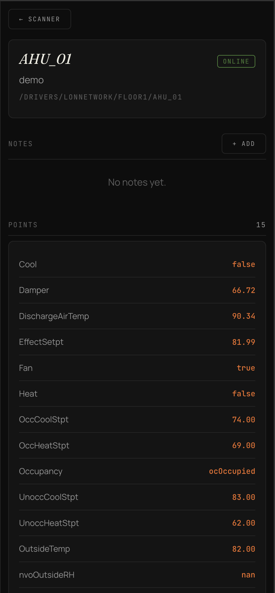
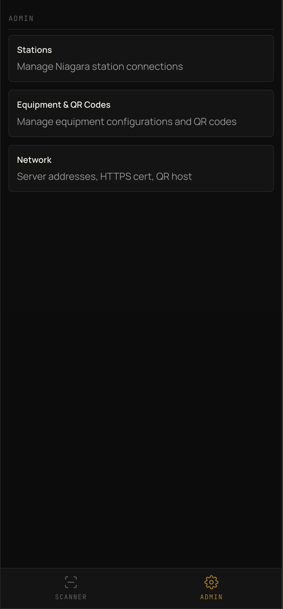
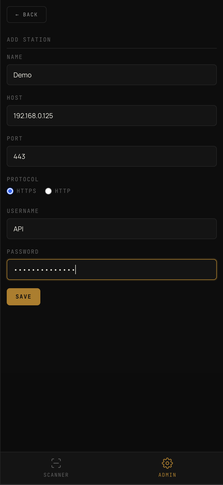
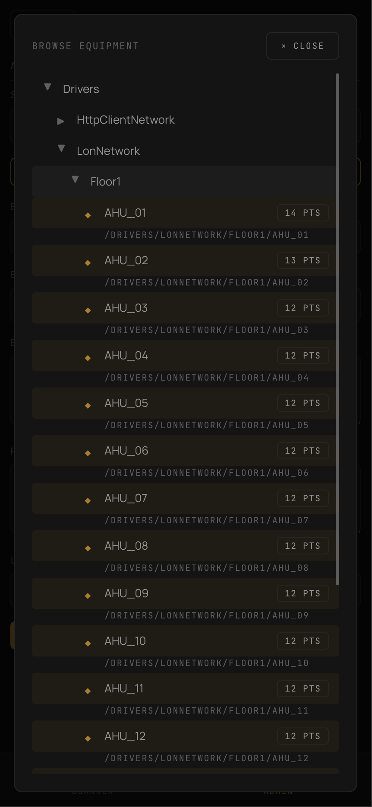
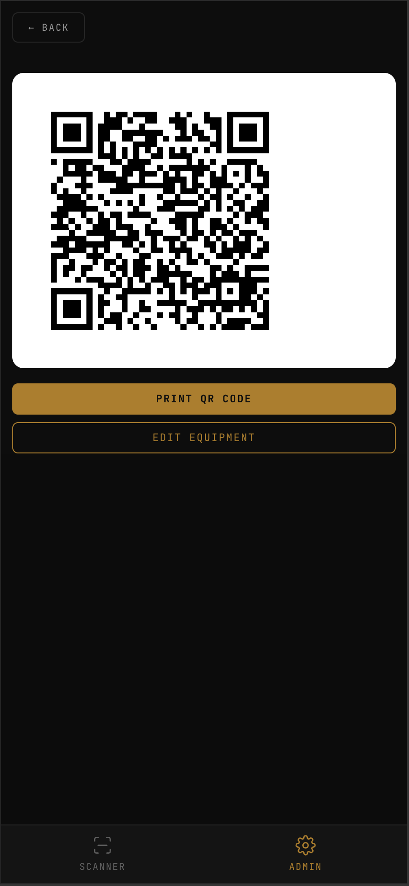
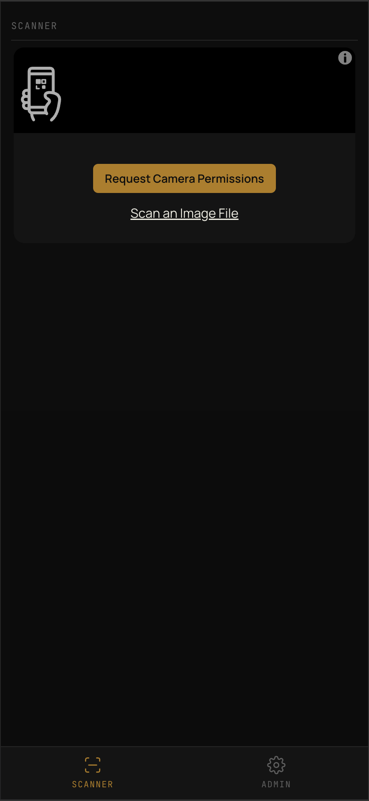

Self-hosted companion for Niagara 4 stations. Stick a QR on the AHU, VFD, boiler — a tech scans with their phone camera and sees live points in the browser. No app install, no cloud, no logins.
Free. Open source. One binary. SQLite data file. Runs on your LAN.
Download the binary, double-click. Opens the admin UI in your browser. SQLite database auto-created.
Enter Niagara host, port, credentials. Browse the tree, pick equipment, select the points techs should see.
Server generates a QR per piece of equipment. Print, stick it on. Techs scan with their phone's native camera — live data loads in the browser.
Admin screens for setup and browser-first technician screens for the field.






qrbas.local so QR codes survive DHCP changes.Grab the binary for your OS. Latest release on GitHub.
The binary isn't code-signed (open source project, no Apple Developer account). Gatekeeper blocks it on first run. Strip the quarantine flag:
cd ~/Downloads
chmod +x qrbas-mac-arm64
xattr -d com.apple.quarantine qrbas-mac-arm64
./qrbas-mac-arm64Open http://localhost:8080 in your browser.
SmartScreen warns on unsigned binaries. Click More info → Run anyway.
qrbas-windows-amd64.exeOpen http://localhost:8080 in your browser.
chmod +x qrbas-linux-amd64
./qrbas-linux-amd64Open http://localhost:8080 in your browser.
qrbas.local hostname..local (bundled with iTunes and most printer drivers).8080 (HTTP), 8443 (HTTPS). Change with -port / -https-port.